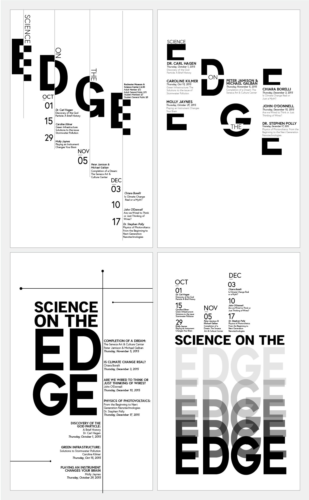
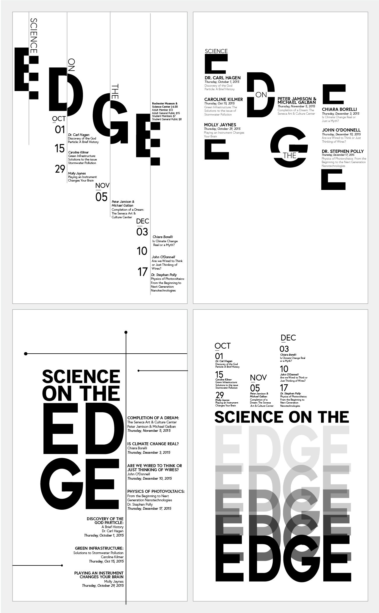
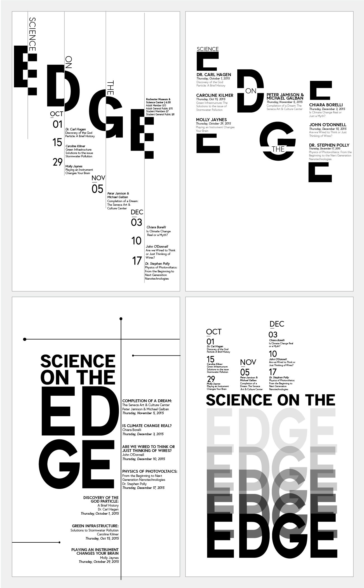
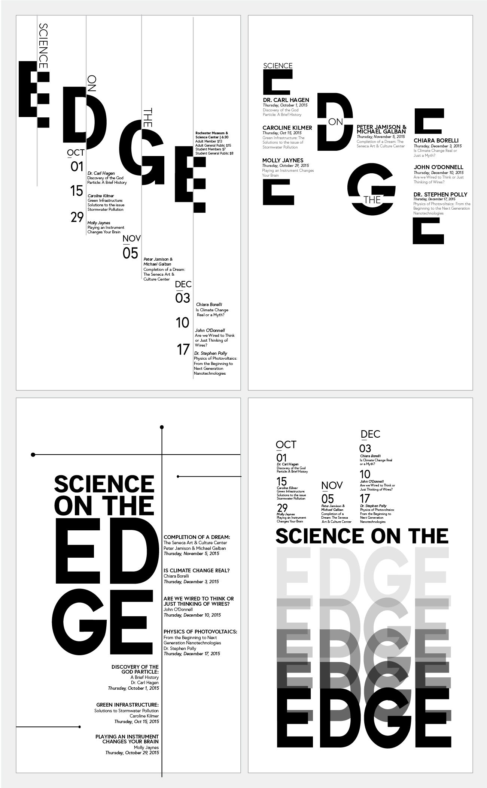

Digital exploration of sketches helped to weed out poor designs and move forward with new ones, while also sticking to the black and white color restriction

I decided to go with the complementary moodboard because I thought the peach would be a great way to use the color in terms of rebranding but also has a youthful vibe which would target the RIT community the best
Addressing the design restrictions for this project involved specific emphasizes on lectures or topics along with color restrictions. Therefore finding the best solution for each emphasis was a challenge but having sketched multiple ideas allowed for more explorations both on paper and digitally. Once I began to design them, it allowed for more play on contrast, color and font to create the bold design I had in mind when it came to executing them in a digital format
For my final compositions I wanted to invert the colors even more contrast for an eye-catching final design, the white text on black gives it a dramatic feel but also forced me to try a new design style. As part of my goal, these final comps were meant to promote the look and feel of the event and therefore simple use of color and bold contrast allows these posters to be so effective.